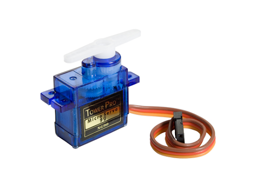

Project 4
Sundial
By Zicong Yu
Overview
You will program an ESP32 to control a servo with various sensors and inputs. At each checkpoint, you will explore the core functions of servos and photoresistors. You will also get more practice with microcontrollers (digital input/output, pulse width modulation, and analog-to-digital conversion) and potentiometers.
Concepts
ESP32 Guide
It is crucial that you have followed the steps in our ESP32 Guide to set up and learn how to program the ESP32. Visit the ESP32 Guide here or by clicking "ESP32 Guide" on the top navigation bar.
Pinout
Thinking about using a pin but you don't know what it does? Refer to the ESP32 Board pinout diagram.

- NC stands for No Connect, and these pins should be left unconnected at all times.
- GPIO stands for a General Purpose Input/Output pin and can be used to send or read signals.
- ADC stands for analog-to-digital converter and it reads the input voltage and makes a digital number to represent that amount of voltage.
- The ~ symbol represents pins that are PWM (Pulse Width Modulation) capable.
Photoresistor
A photoresistor is a type of resistor that changes its resistance based on the amount of light it is exposed to. This is possible because it is made of a semiconductor material that becomes more electrically conductive as it absorbs electromagnetic radiation such as visible light. It offers a simple and effective way to measure light levels and use that data in various projects.

Using it with ESP32
Like a normal resistor, the photoresistor has no polarity and can be connected both ways. We can connect the photoresistor in series
with a normal resistor to create a voltage divider at the node between the photoresistor and the normal resistor. The voltage would vary based on the light level,
and by connecting that node to one of the ESP32’s analog-to-digital converters (ADC) with a jumper wire,
we can translate the analog signal into a discrete integer value in the range of 0-4095 using analogRead().
Servo
A servo motor is a type of motor that converts electrical energy into mechanical energy to achieve precise control. As seen in the image below, various arms can be attached to the splined gear on the top of the motor for different functions. In this project, you will be controlling the position of the servo with a photoresistor to make a sundial.
The micro servo we will be using has a rating of “9g”. This represents the torque of the motor, or how much force it can apply. In the case of the servo above, it can generate 9 grams of force when 1 centimeter away from the shaft/center of the motor. The force is proportional to the distance, so the motor can support a torque of 4.5 g when 2 cm away from the shaft, 3 g when 3 cm away, and so on.
As shown in the image above, the servo motor has three different wires; the power (red), ground (brown), and pulse-width modulation (orange) wires. The power and ground wires are used to supply the servo motor with power, while the pulse-width modulation (PWM) wire is used to feed a varying PWM signal that determines the servo's position.
A demo of using out provided servo is found below:
-
Servo your_servo_nameis used to initialize the physical servo object in your code. Keep in mind that you can name your servo to whatever you’d like. -
your_servo_name.attach(int servoPin)attaches the servo object to a pin with min max values to set the axis of rotation -
your_servo_name.write()can be used to set the servo to any angle between0-180
#include <ESP32Servo.h>
// Assign variable to pin number of Servo’s PWM pin
int servoPin = 10;
// Initialize servo object with name myServo
Servo myServo;
void setup() {
// Attach object myServo to the physical servo
myServo.attach(servoPin);
}
void loop() {
// Writes a 0 degree angle to the servo
myServo.write(0);
delay(1000);
// Writes a 90 degree angle to the servo
myServo.write(90);
delay(1000);
// Writes a 180 degree angle to the servo
myServo.write(180);
delay(1000);
}
Potentiometer
A potentiometer is a three-terminal variable resistor. We will use it as a voltage divider, a circuit which accepts a supply voltage and outputs a voltage which is a fraction of the supply voltage. The voltage of the potentiometer's output pin ranges between the VCC and GND pin voltages, depending on the dial's position.

How it Works
We just referred to the potentiometer as a kind of resistor. Why? Internally, a resistive strip connects its VCC and GND pins, and a rotating wiper connects the output pin to the strip. The greater the distance along the strip between the wiper and the VCC pin, the greater the resistance between the wiper and VCC.

In this voltage divider configuration, the wiper reduces the voltage at the output pin the further it is turned clockwise (toward GND).
Using it with ESP32
We can connect the potentiometer's output pin to one of the ESP32's ADC pins (see its pinout
above).
The ADC pin is wired to the analog-to-digital converter (ADC)
inside the ESP32-C3 chip. The ADC is hardware that translates the analog signal to a discrete
digital signal. Using
analogRead(), we interpret the pin's analog voltage as
a
discrete integer in the range 0-4095.
Software Installations
Servo Library
To download the servo library, click on the Library manager icon on the left panel of Arduino IDE, and type in “ESP32Servo.” The first result made by Kevin Harrington, John K. Bennett is the library we will be using to control the servo. Download the latest version of the arduino library and then you should be able to use the library’s already developed functions.
Requirements
Potentiometer-Controlled Servo
- You must build a circuit with a potentiometer that can control a servo.
- The user must be able to adjust the servo’s angle to any angle between 0-180° when turning a singular potentiometer dial.
- When turning a potentiometer in one way, the servo should approach 180°.
- When turning a potentiometer the other way, the servo should approach 0°.
- The circuit must be built on a breadboard.
Sundial
- You must build a circuit with a photoresistor-controlled servo.
- The servo’s angle must adjust between 0-180° when the brightness of a room changes.
- When the brightness of a room gets darker, the servo should approach 0°.
- When the brightness of a room gets brighter, the servo should approach 180°.
- The circuit must be built on a breadboard, and the servo should be attached onto the sundial cutout provided in the OPS kit to display the brightness of the room.
Parts
| Part Name | Qty |
|---|---|
| Jumper Wire | X? |
| Breadboard | 1 |
| Potentiometer, 10kΩ | 1 |
| Mirco Servo | 1 |
| ESP32 | 1 |
| Resistor, 4.7KΩ | 1 |
| Sundial Diagram | 1 |
| USB-A to USB-C Cable | 1 |
Schematics
Instructions
Checkpoint 1
-
Build the circuit from Schematic A (Potentiometer-Controlled Servo) on your breadboard.
Attach the one-sided arm attachment to the servo.
Use the pseudo code below to program a potentiometer to control a servo.These functions may be helpful:
Serial.begin(),pinMode(),analogRead(), and the servo fuctions above.#include <ESP32Servo.h> // Assign variable to pin number for Potentiometer // Assign variable to pin number of Servo’s PWM pin // Initialize servo object with your servo name void setup() { // Configure the Potentiometer's pin behavior to INPUT // Attach object of your servo name to the physical servo // Configure the Serial baud rate to 115200 } void loop() { // Read potentiometer pin value // Set and map servo angle to the potentiometer pin value } - Upload your sketch to the ESP32, and verify that the program executes as expected; the potentiometer should control the angle of the servo from 0°-180°.
Checkpoint 2
- Build the circuit from Schematic B (Sundial) on your breadboard. Your goal is to control the servo’s angle based on the brightness that the photoresistor detects, and display the brightness of the room on the Sundial cutout.
- Cut out the rectangle in the middle of the Sundial cutout with scissors and insert the head of the servo through the rectangle. Use the one-sided arm attachment of the servo to display the brightness.
-
Use the pseudo code below to program the circuit.These functions may be helpful:
Serial.begin(),pinMode(),analogRead(),analogWrite(), and the servo fuctions above.#include <ESP32Servo.h>> // Assign variable to pin number for Photoresistor // Assign variable to pin number of Servo’s PWM pin // Initialize servo object with your servo name void setup() { // Configure the Photoresistor's pin behavior to INPUT // Attach object of your servo name to the physical servo // Configure the Serial baud rate to 115200 } void loop() { // Read photoresistor pin value // Set and map the servo angle to the photoresistor pin value } - Upload your sketch to the ESP32, and verify that the program executes as expected; the photoresistor should control the angle of the servo from 0°-180° and display the brightness of the room through the cutout.
Deliverables (Enrolled Students Only)
Students enrolled in the course must submit the following deliverables to the corresponding Canvas course assignment.
Place the following files in a single folder:
-
Video of the Potentiometer-Controlled Servo (Schematic A) on a breadboard
In the video, showcase the 0-180° movement of the servo using a potentiometer.
-
Video of the Sundial (Schematic B) on a breadboard.
In the video, showcase the 0–180° movement of the servo based on the light level sensed by the photoresistor.
Compress the folder to a zip file and rename the file using the format “ops_project#_lastname_firstname.zip” Then, submit the zip file to the Project 4 Canvas assignment.